hostsEXISTING · legacy
connectEXISTING · legacy
sftpEXISTING · legacy
snippetsEXISTING · legacy
historyEXISTING · legacy
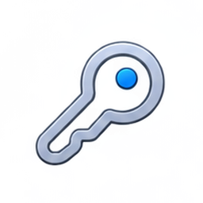

keychainEXISTING · legacy
vaultsEXISTING · legacy
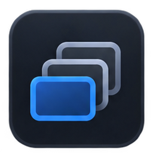

workspacesEXISTING · legacy

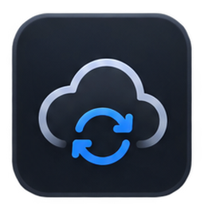
cloud_syncEXISTING · legacy
settingsEXISTING · legacy

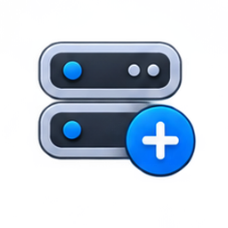
add_hostEXISTING · legacy
searchEXISTING · legacy
terminalEXISTING · legacy
serialEXISTING · legacy
split_viewEXISTING · legacy
grid_viewEXISTING · legacy
list_viewEXISTING · legacy
groupsEXISTING · legacy
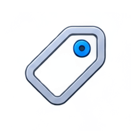
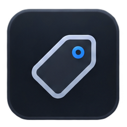
tagsEXISTING · legacy
favoriteEXISTING · legacy
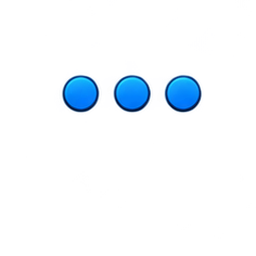

moreEXISTING · legacy
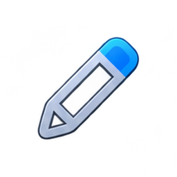
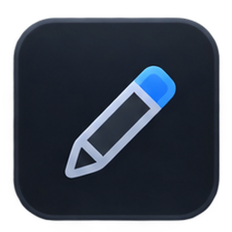
editEXISTING · legacy
deleteEXISTING · legacy
refreshEXISTING · legacy
profileEXISTING · legacy
known_hostsEXISTING · legacy
port_forwardingEXISTING · legacy
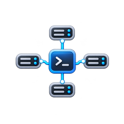

shellumi_logoEXISTING · legacy
group_settingsEXISTING · legacy
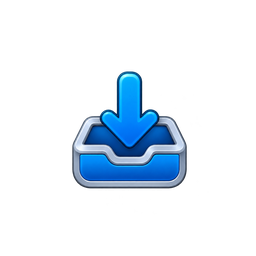
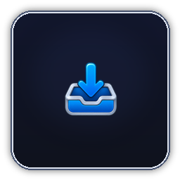
importEXISTING · legacy
exportEXISTING · legacy
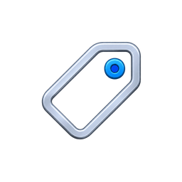
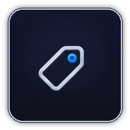
tagEXISTING · legacy
calendar_sortEXISTING · legacy
certificateEXISTING · legacy
private_keyEXISTING · legacy
public_keyEXISTING · legacy
identity_cardEXISTING · legacy
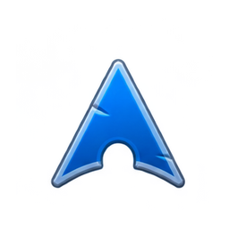
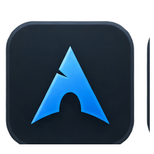
os_archEXISTING · legacy
os_ubuntuEXISTING · legacy
os_macosEXISTING · legacy
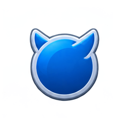
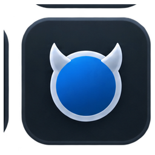
os_freebsdEXISTING · legacy
os_netbsdEXISTING · legacy
os_openbsdEXISTING · legacy
os_linuxEXISTING · legacy
os_windowsEXISTING · legacy
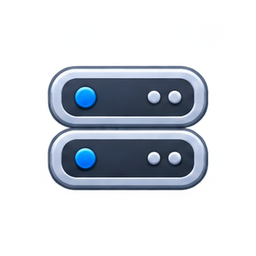
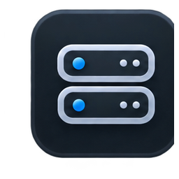
serverEXISTING · legacy
fido2EXISTING · legacy
fingerprintEXISTING · legacy
logEXISTING · legacy
bellEXISTING · legacy
invite_memberEXISTING · legacy
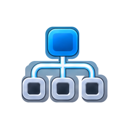
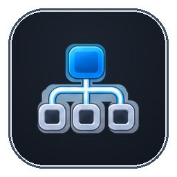
infrastructureEXISTING · legacy
diagnosticsEXISTING · legacy
mobileEXISTING · legacy
overviewP0 · overview connection
inspectorP0 · overview connection
new_groupP0 · overview connection
duplicate_hostP0 · overview connection
move_to_groupP0 · overview connection
copy_to_groupP0 · overview connection
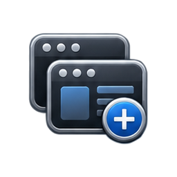
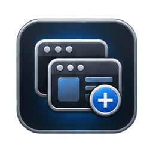
new_workspaceP1 · overview connection
new_vaultP1 · overview connection
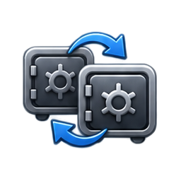
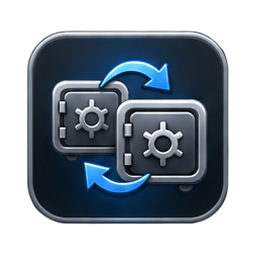
switch_vaultP1 · overview connection
quick_connectP1 · overview connection
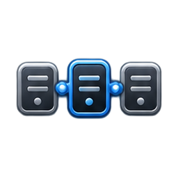
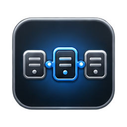
jump_hostP1 · overview connection
sshP0 · overview connection
moshP0 · overview connection
rdpP0 · overview connection
vncP0 · overview connection
disconnectP0 · session views
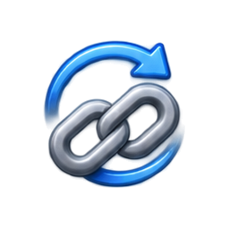
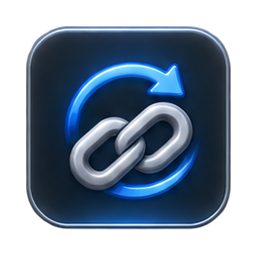
reconnectP0 · session views
local_terminalP1 · session views
session_recordP1 · session views
session_replayP1 · session views
session_infoP1 · session views
fit_to_viewP0 · session views
actual_sizeP0 · session views
fill_viewP0 · session views
display_resolutionP0 · session views
dynamic_resizeP0 · session views
remote_keyboardP0 · session views
remote_clipboardP0 · session views
view_onlyP0 · session views
fullscreenP0 · session views
send_ctrl_alt_delP1 · session media transfers1
send_windows_keyP1 · session media transfers1
shared_driveP1 · session media transfers1
remote_audioP1 · session media transfers1
remote_audio_mutedP1 · session media transfers1
remote_microphoneP1 · session media transfers1
remote_microphone_mutedP1 · session media transfers1
input_enabledP1 · session media transfers1
session_telemetryP1 · session media transfers1
uploadP0 · session media transfers1
downloadP0 · session media transfers1
transfer_queueP0 · session media transfers1
new_folderP0 · session media transfers1
transfer_progressP1 · session media transfers1
transfer_completeP1 · session media transfers1
transfer_failedP1 · transfer vault sync1
transfer_retryP1 · transfer vault sync1
local_filesP1 · transfer vault sync1
remote_filesP1 · transfer vault sync1
file_permissionsP1 · transfer vault sync1
hidden_filesP1 · transfer vault sync1
vault_lockP0 · transfer vault sync1
vault_unlockP0 · transfer vault sync1
google_driveP0 · transfer vault sync1
sync_conflictP0 · transfer vault sync1
encrypted_backupP0 · transfer vault sync1
restore_backupP0 · transfer vault sync1
recovery_codeP0 · transfer vault sync1
vault_encryptionP1 · transfer vault sync1
server_syncP1 · transfer vault sync1
sync_uploadP1 · sync keys security
sync_downloadP1 · sync keys security
sync_offlineP1 · sync keys security
sync_successP1 · sync keys security
setup_resumeP1 · sync keys security
device_enrollmentP1 · sync keys security
host_key_verifiedP0 · sync keys security
host_key_changedP0 · sync keys security
ssh_agentP1 · sync keys security
generate_keyP1 · sync keys security
rotate_keyP1 · sync keys security
revoke_keyP1 · sync keys security
passwordP1 · sync keys security
security_auditP1 · sync keys security
trusted_deviceP1 · sync keys security
untrusted_deviceP1 · team tunnels aws
team_membersP1 · team tunnels aws
shared_vaultP1 · team tunnels aws
member_revokeP1 · team tunnels aws
pending_inviteP1 · team tunnels aws
role_adminP1 · team tunnels aws
role_editorP1 · team tunnels aws
role_viewerP1 · team tunnels aws
team_key_rotationP1 · team tunnels aws
tunnel_localP0 · team tunnels aws
tunnel_remoteP0 · team tunnels aws
tunnel_socksP0 · team tunnels aws
tunnel_activeP1 · team tunnels aws
tunnel_stoppedP1 · team tunnels aws
provider_awsP1 · team tunnels aws
provider_azureP1 · providers inventory diag os1
provider_digitaloceanP1 · providers inventory diag os1
provider_ansibleP1 · providers inventory diag os1
provider_connectP1 · providers inventory diag os1
discover_hostsP1 · providers inventory diag os1
inventoryP1 · providers inventory diag os1
inventory_syncP1 · providers inventory diag os1
health_checkP1 · providers inventory diag os1
benchmarkP1 · providers inventory diag os1
latencyP1 · providers inventory diag os1
network_testP1 · providers inventory diag os1
storage_testP1 · providers inventory diag os1
os_debianP2 · providers inventory diag os1
os_fedoraP2 · providers inventory diag os1
os_rhelP2 · providers inventory diag os1
os_centosP2 · os2
os_rockyP2 · os2
os_almalinuxP2 · os2
os_alpineP2 · os2
os_opensuseP2 · os2
os_kaliP2 · os2
os_windows_serverP2 · os2
os_androidP2 · os2
os_iosP2 · os2